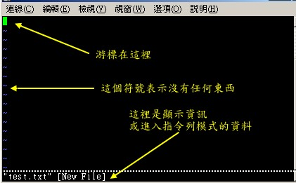
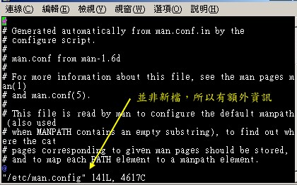
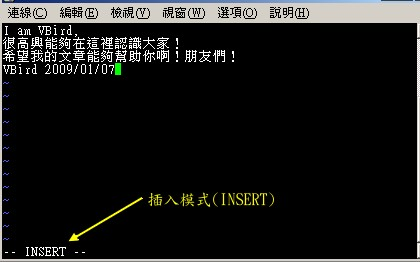
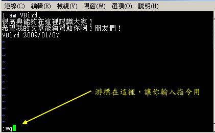

| |
最近更新日期：2009/08/20
 vi 的使用 vi 的使用
基本上 vi 共分为三种模式，分别是『一般模式』、『编辑模式』与『指令列命令模式』。
这三种模式的作用分别是：
- 一般模式：
以 vi 打开一个档案就直接进入一般模式了(这是默认的模式)。在这个模式中，
你可以使用『上下左右』按键来移动光标，你可以使用『删除字符』或『删除整行』来处理档案内容，
也可以使用『复制、贴上』来处理你的文件数据。
- 编辑模式：
在一般模式中可以进行删除、复制、贴上等等的动作，但是却无法编辑文件内容的！
要等到你按下『i,
I, o, O, a, A, r, R』等任何一个字母之后才会进入编辑模式。注意了！通常在
Linux 中，按下这些按键时，在画面的左下方会出现『 INSERT
或 REPLACE 』的字样，此时才可以进行编辑。而如果要回到一般模式时，
则必须要按下『Esc』这个按键即可退出编辑模式。
- 指令列命令模式：
在一般模式当中，输入『
: / ? 』三个中的任何一个按钮，就可以将光标移动到最底下那一行。在这个模式当中，
可以提供你『搜寻资料』的动作，而读取、存盘、大量取代字符、离开
vi 、显示行号等等的动作则是在此模式中达成的！
简单的说，我们可以将这三个模式想成底下的图标来表示：

图 2.1、vi 三种模式的相互关系
注意到上面的图示，你会发现一般模式可与编辑模式及指令列模式切换，
但编辑模式与指令列模式之间不可互相切换喔！这非常重要啦！
闲话不多说，我们底下以一个简单的例子来进行说明吧！
简易执行范例
如果你想要使用 vi 来建立一个名为 test.txt 的档案时，你可以这样做：
- 使用 vi 进入一般模式；
[root@www ~]# vi test.txt
|
直接输入『 vi 档名』就能够进入 vi 的一般模式了。请注意，记得 vi 后面一定要加档名，不管该档名存在与否！
整个画面主要分为两部份，上半部与最底下一行两者可以视为独立的。如下图 2.1.1 所示，图中那个虚线是不存在的，
鸟哥用来说明而已啦！上半部显示的是档案的实际内容，最底下一行则是状态显示列(如下图的[New File]信息)，
或者是命令下达列喔！

图 2.1.1、用 vi 开启一个新档案
如果你开启的档案是旧档(已经存在的档案)，则可能会出现如下的信息：

图 2.1.2、用 vi 开启一个旧档案
如上图 2.1.2 所示，箭头所指的那个『"/etc/man.config" 141L, 4617C』代表的是『档名为 /etc/man.conf，
档案内有 141 行 以及具有 4617 个字符』的意思！
那一行的内容并不是在档案内，而是 vi 显示一些信息的地方喔！此时是在一般模式的环境下啦。
接下来开始来输入吧！
- 按下 i 进入编辑模式，开始编辑文字
在一般模式之中，只要按下 i, o, a 等字符就可以进入编辑模式了！在编辑模式当中，你可以发现在左下角状态栏中会出现
–INSERT- 的字样，那就是可以输入任意字符的提示啰！这个时候，键盘上除了
[Esc] 这个按键之外，其他的按键都可以视作为一般的输入按钮了，所以你可以进行任何的编辑啰！

图 2.1.3、开始用 vi 来进行编辑
Tips:
在 vi 里面， [tab] 这个按钮所得到的结果与空格符所得到的结果是不一样的，特别强调一下！
|  |
- 按下 [ESC] 按钮回到一般模式
好了，假设我已经按照上面的样式给他编辑完毕了，那么应该要如何退出呢？是的！没错！就是给他按下
[Esc] 这个按钮即可！马上你就会发现画面左下角的 – INSERT – 不见了！
- 在一般模式中按下 :wq 储存后离开 vi
OK，我们要存档了，存盘并离开的指令很简单，输入『:wq』即可存档离开！ (注意了，按下
: 该光标就会移动到最底下一行去！) 这时你在提示字符后面输入『 ls -l 』即可看到我们刚刚建立的
test.txt 档案啦！整个图示有点像底下这样：

图 2.1.4、储存并离开 vi 环境
如此一来，你的档案 test.txt 就已经建立起来啰！需要注意的是，如果你的档案权限不对，例如为
-r--r--r-- 时，那么可能会无法写入，此时可以使用『强制写入』的方式吗？可以！使用『 :wq! 』
多加一个惊叹号即可！不过，需要特别注意呦！那个是在『你的权限可以改变』的情况下才能成立的！
关于权限的概念，请自行回去翻一下第六章的内容吧！
按键说明
除了上面简易范例的 i, [Esc], :wq 之外，其实 vim 还有非常多的按键可以使用喔！在介绍之前还是要再次强调，
vim 的三种模式只有一般模式可以与编辑、指令列模式切换，编辑模式与指令列模式之间并不能切换的！
这点在图2.1里面有介绍到，注意去看看喔！底下就来谈谈 vim 软件中会用到的按键功能吧！
- 第一部份：一般模式可用的按钮说明，光标移动、复制贴上、搜寻取代等
| 移动光标的方法 |
| h 或 向左箭头键(←) |
光标向左移动一个字符 |
| j 或 向下箭头键(↓) |
光标向下移动一个字符 |
| k 或 向上箭头键(↑) |
光标向上移动一个字符 |
| l 或 向右箭头键(→) |
光标向右移动一个字符 |
|
如果你将右手放在键盘上的话，你会发现 hjkl 是排列在一起的，因此可以使用这四个按钮来移动光标。
如果想要进行多次移动的话，例如向下移动 30 行，可以使用 "30j" 或 "30↓" 的组合按键，
亦即加上想要进行的次数(数字)后，按下动作即可！ |
| [Ctrl] + [f] |
屏幕『向下』移动一页，相当于 [Page Down]按键
(常用) |
| [Ctrl] + [b] |
屏幕『向上』移动一页，相当于 [Page Up] 按键
(常用) |
| [Ctrl] + [d] |
屏幕『向下』移动半页 |
| [Ctrl] + [u] |
屏幕『向上』移动半页 |
| + |
光标移动到非空格符的下一列 |
| - |
光标移动到非空格符的上一列 |
| n<space> |
那个 n 表示『数字』，例如 20 。按下数字后再按空格键，光标会向右移动这一行的 n
个字符。例如 20<space> 则光标会向后面移动 20 个字符距离。 |
| 0 或功能键[Home] |
这是数字『 0 』：移动到这一行的最前面字符处
(常用) |
| $ 或功能键[End] |
移动到这一行的最后面字符处(常用) |
| H |
光标移动到这个屏幕的最上方那一行的第一个字符 |
| M |
光标移动到这个屏幕的中央那一行的第一个字符 |
| L |
光标移动到这个屏幕的最下方那一行的第一个字符 |
| G |
移动到这个档案的最后一行(常用) |
| nG |
n 为数字。移动到这个档案的第 n 行。例如 20G 则会移动到这个档案的第 20
行(可配合 :set nu) |
| gg |
移动到这个档案的第一行，相当于 1G 啊！
(常用) |
| n<Enter> |
n 为数字。光标向下移动 n 行(常用) |
| 搜寻与取代 |
| /word |
向光标之下寻找一个名称为 word 的字符串。例如要在档案内搜寻 vbird
这个字符串，就输入 /vbird 即可！
(常用) |
| ?word |
向光标之上寻找一个字符串名称为 word 的字符串。 |
| n |
这个 n 是英文按键。代表『重复前一个搜寻的动作』。举例来说，
如果刚刚我们执行 /vbird 去向下搜寻 vbird 这个字符串，则按下 n 后，会向下继续搜寻下一个名称为 vbird
的字符串。如果是执行 ?vbird 的话，那么按下 n 则会向上继续搜寻名称为 vbird 的字符串！ |
| N |
这个 N 是英文按键。与 n 刚好相反，为『反向』进行前一个搜寻动作。
例如 /vbird 后，按下 N 则表示『向上』搜寻 vbird 。 |
|
使用 /word 配合 n 及 N 是非常有帮助的！可以让你重复的找到一些你搜寻的关键词！
|
| :n1,n2s/word1/word2/g |
n1 与 n2 为数字。在第 n1 与 n2 行之间寻找 word1 这个字符串，并将该字符串取代为
word2 ！举例来说，在 100 到 200 行之间搜寻 vbird 并取代为 VBIRD 则：
『:100,200s/vbird/VBIRD/g』。(常用) |
| :1,$s/word1/word2/g |
从第一行到最后一行寻找 word1 字符串，并将该字符串取代为
word2 ！(常用) |
| :1,$s/word1/word2/gc |
从第一行到最后一行寻找 word1 字符串，并将该字符串取代为
word2 ！且在取代前显示提示字符给用户确认 (confirm)
是否需要取代！(常用) |
| 删除、复制与贴上 |
| x, X |
在一行字当中，x 为向后删除一个字符 (相当于 [del] 按键)，
X 为向前删除一个字符(相当于 [backspace] 亦即是退格键)
(常用) |
| nx |
n 为数字，连续向后删除 n 个字符。举例来说，我要连续删除 10 个字符，
『10x』。 |
| dd |
删除游标所在的那一整列(常用) |
| ndd |
n 为数字。删除光标所在的向下 n 列，例如 20dd 则是删除 20 列
(常用) |
| d1G |
删除光标所在到第一行的所有数据 |
| dG |
删除光标所在到最后一行的所有数据 |
| d$ |
删除游标所在处，到该行的最后一个字符 |
| d0 |
那个是数字的 0 ，删除游标所在处，到该行的最前面一个字符 |
| yy |
复制游标所在的那一行(常用) |
| nyy |
n 为数字。复制光标所在的向下 n 列，例如 20yy 则是复制 20
列(常用) |
| y1G |
复制游标所在列到第一列的所有数据 |
| yG |
复制游标所在列到最后一列的所有数据 |
| y0 |
复制光标所在的那个字符到该行行首的所有数据 |
| y$ |
复制光标所在的那个字符到该行行尾的所有数据 |
| p, P |
p 为将已复制的数据在光标下一行贴上，P 则为贴在游标上一行！
举例来说，我目前光标在第 20 行，且已经复制了 10 行数据。则按下 p 后，
那 10 行数据会贴在原本的 20 行之后，亦即由 21 行开始贴。但如果是按下 P 呢？
那么原本的第 20 行会被推到变成 30 行。
(常用) |
| J |
将光标所在列与下一列的数据结合成同一列 |
| c |
重复删除多个数据，例如向下删除 10 行，[ 10cj ] |
| u |
复原前一个动作。(常用) |
| [Ctrl]+r |
重做上一个动作。(常用) |
| 这个 u 与 [Ctrl]+r 是很常用的指令！一个是复原，另一个则是重做一次～
利用这两个功能按键，你的编辑，嘿嘿！很快乐的啦！ |
| . |
不要怀疑！这就是小数点！意思是重复前一个动作的意思。
如果你想要重复删除、重复贴上等等动作，按下小数点『.』就好了！
(常用) |
| 进入插入或取代的编辑模式 |
| i, I |
进入插入模式(Insert mode)：
i 为『从目前光标所在处插入』， I 为『在目前所在行的第一个非空格符处开始插入』。
(常用) |
| a, A |
进入插入模式(Insert mode)：
a 为『从目前光标所在的下一个字符处开始插入』， A
为『从光标所在行的最后一个字符处开始插入』。(常用) |
| o, O |
进入插入模式(Insert mode)：
这是英文字母 o 的大小写。o 为『在目前光标所在的下一行处插入新的一行』；
O 为在目前光标所在处的上一行插入新的一行！(常用) |
| r, R |
进入取代模式(Replace mode)：
r 只会取代光标所在的那一个字符一次；R会一直取代光标所在的文字，直到按下
ESC 为止；(常用) |
| 上面这些按键中，在 vi 画面的左下角处会出现『--INSERT--』或『--REPLACE--』的字样。
由名称就知道该动作了吧！！特别注意的是，我们上面也提过了，你想要在档案里面输入字符时，
一定要在左下角处看到 INSERT 或 REPLACE 才能输入喔！ |
| [Esc] |
退出编辑模式，回到一般模式中(常用) |
- 第三部份：一般模式切换到指令列模式的可用的按钮说明
| 指令列的储存、离开等指令 |
| :w |
将编辑的数据写入硬盘档案中(常用) |
| :w! |
若文件属性为『只读』时，强制写入该档案。不过，到底能不能写入，
还是跟你对该档案的档案权限有关啊！ |
| :q |
离开 vi (常用) |
| :q! |
若曾修改过档案，又不想储存，使用 ! 为强制离开不储存档案。 |
| 注意一下啊，那个惊叹号 (!) 在 vi 当中，常常具有『强制』的意思～ |
| :wq |
储存后离开，若为 :wq! 则为强制储存后离开
(常用) |
| ZZ |
这是大写的 Z 喔！若档案没有更动，则不储存离开，若档案已经被更动过，则储存后离开！ |
| :w [filename] |
将编辑的数据储存成另一个档案（类似另存新档） |
| :r [filename] |
在编辑的数据中，读入另一个档案的数据。亦即将 『filename』
这个档案内容加到游标所在行后面 |
| :n1,n2 w [filename] |
将 n1 到 n2 的内容储存成 filename 这个档案。 |
| :! command |
暂时离开 vi 到指令列模式下执行 command 的显示结果！例如
『:! ls /home』即可在 vi 当中察看 /home 底下以 ls 输出的档案信息！ |
| vim 环境的变更 |
| :set nu |
显示行号，设定之后，会在每一行的前缀显示该行的行号 |
| :set nonu |
与 set nu 相反，为取消行号！ |
特别注意，在 vi 中，『数字』是很有意义的！数字通常代表重复做几次的意思！
也有可能是代表去到第几个什么什么的意思。举例来说，要删除 50 行，则是用 『50dd』 对吧！
数字加在动作之前～那我要向下移动 20 行呢？那就是『20j』或者是『20↓』即可。
OK！会这些指令就已经很厉害了，因为常用到的指令也只有不到一半！通常 vi
的指令除了上面鸟哥注明的常用的几个外，其他是不用背的，你可以做一张简单的指令表在你的屏幕墙上，
一有疑问可以马上的查询呦！这也是当初鸟哥使用 vim 的方法啦！
一个案例练习
来来来！赶紧测试一下你是否已经熟悉 vi 这个指令呢？请依照底下的需求进行指令动作。
(底下的操作为使用 CentOS 5.2 中的 man.config 来做练习的，该档案你可以在这里下载：
http://cn.linux.vbird.org/linux_basic/0310vi/man.config。)
看看你的显示结果与鸟哥的结果是否相同啊？
- 请在 /tmp 这个目录下建立一个名为 vitest 的目录；
- 进入 vitest 这个目录当中；
- 将 /etc/man.config 复制到本目录底下(或由上述的连结下载 man.config 档案)；
- 使用 vi 开启本目录下的 man.config 这个档案；
- 在 vi 中设定一下行号；
- 移动到第 58 行，向右移动 40 个字符，请问你看到的双引号内是什么目录？
- 移动到第一行，并且向下搜寻一下『 bzip2 』这个字符串，请问他在第几行？
- 接着下来，我要将 50 到 100 行之间的『小写 man 字符串』改为『大写 MAN
字符串』，并且一个一个挑选是否需要修改，如何下达指令？如果在挑选过程中一直按『y』，
结果会在最后一行出现改变了几个 man 呢？
- 修改完之后，突然反悔了，要全部复原，有哪些方法？
- 我要复制 65 到 73 这九行的内容(含有MANPATH_MAP)，并且贴到最后一行之后；
- 21 到 42 行之间的开头为 # 符号的批注数据我不要了，要如何删除？
- 将这个档案另存成一个 man.test.config 的檔名；
- 去到第 27 行，并且删除 15 个字符，结果出现的第一个单字是什么？
- 在第一行新增一行，该行内容输入『I am a student...』；
- 储存后离开吧！
整个步骤可以如下显示：
- 『mkdir /tmp/vitest』
- 『cd /tmp/vitest』
- 『cp /etc/man.config .』
- 『vi man.config』
- 『:set nu』然后你会在画面中看到左侧出现数字即为行号。
- 先按下『58G』再按下『40→』会看到『/dir/bin/foo』这个字样在双引号内；
- 先执行『1G』或『gg』后，直接输入『/bzip2』，则会去到第 118 行才对！
- 直接下达『 :50,100s/man/MAN/gc 』即可！若一直按『y』最终会出现『在 23 行内置换 25 个字符串』的说明。
- (1)简单的方法可以一直按『 u 』回复到原始状态，(2)使用不储存离开『 :q! 』之后，再重新读取一次该档案；
- 『65G』 然后再『 9yy 』之后最后一行会出现『复制九行』之类的说明字样。
按下『 G 』到最后一行，再给他『 p 』贴上九行！
- 因为 21~42 22 行，因此『 21G 』→『 22dd 』就能删除 22 行，此时你会发现游标所在 21 行的地方变成 MANPATH 开头啰，
批注的 # 符号那几行都被删除了。
- 『 :w man.test.config 』，你会发现最后一行出现 "man.test.config" [New].. 的字样。
- 『27G』 之后，再给他『 15x 』即可删除 15 个字符，出现『 you 』的字样；
- 先『 1G 』去到第一行，然后按下大写的『 O 』便新增一行且在插入模式；开始输入『I am a student...』后，
按下[Esc]回到一般模式等待后续工作；
- 『:wq』
如果你的结果都可以查的到，那么 vi 的使用上面应该没有太大的问题啦！剩下的问题会是在…打字练习…。
vim 的暂存档、救援回复与开启时的警告讯息
在目前主要的编辑软件都会有『回复』的功能，亦即当你的系统因为某些原因而导致类似当机的情况时，
还可以透过某些特别的机制来让你将之前未储存的数据『救』回来！这就是鸟哥这里所谓的『回复』功能啦！
那么 vim 有没有回复功能呢？有的！ vim 就是透过『暂存档』来救援的啦！
当我们在使用 vim 编辑时， vim 会在与被编辑的档案的目录下，再建立一个名为 .filename.swp 的档案。
比如说我们在上一个小节谈到的编辑 /tmp/vitest/man.config 这个档案时， vim 会主动的建立 /tmp/vitest/.man.config.swp
的暂存档，你对 man.config 做的动作就会被记录到这个 .man.config.swp 当中喔！如果你的系统因为某些原因断线了，
导致你编辑的档案还没有储存，这个时候 .man.config.swp 就能够发会救援的功能了！我们来测试一下吧！
底下的练习有些部分的指令我们尚未谈到，没关系，你先照着做，后续再回来了解啰！
[root@www ~]# cd /tmp/vitest
[root@www vitest]# vim man.config
# 此时会进入到 vim 的画面，请在 vim 的一般模式下按下『 [ctrl]-z 』的组合键
[1]+ Stopped vim man.config <==按下 [ctrl]-z 会告诉你这个讯息
|
当我们在 vim 的一般模式下按下 [ctrl]-z 的组合按键时，你的 vim 会被丢到背景去执行！
这部份的功能我们会在第十七章的程序管理当中谈到，
你这里先知道一下即可。回到命令提示字符后，接下来我们来模拟将 vim 的工作不正常的中断吧！
[root@www vitest]# ls -al
total 48
drwxr-xr-x 2 root root 4096 Jan 12 14:48 .
drwxrwxrwt 7 root root 4096 Jan 12 13:26 ..
-rw-r--r-- 1 root root 4101 Jan 12 13:55 man.config
-rw-r--r-- 1 root root 4096 Jan 12 14:48 .man.config.swp <==就是他，暂存档
-rw-r--r-- 1 root root 4101 Jan 12 13:43 man.test.config
[root@www vitest]# kill -9 %1 <==这里仿真断线停止 vim 工作
[root@www vitest]# ls -al .man.config.swp
-rw-r--r-- 1 root root 4096 Jan 12 14:48 .man.config.swp <==暂存档还是会存在！
|
那个 kill 可以仿真将系统的 vim 工作删除的情况，你可以假装当机了啦！
由于 vim 的工作被不正常的中断，导致暂存盘无法藉由正常流程来结束，
所以暂存档就不会消失，而继续保留下来。此时如果你继续编辑那个 man.config ，会出现什么情况呢？
会出现如下所示的状态喔：
[root@www vitest]# vim man.config
E325: ATTENTION <==错误代码
Found a swap file by the name ".man.config.swp" <==底下数行说明有暂存档的存在
owned by: root dated: Mon Jan 12 14:48:24 2009
file name: /tmp/vitest/man.config <==这个暂存盘属于哪个实际的档案？
modified: no
user name: root host name: www.vbird.tsai
process ID: 11539
While opening file "man.config"
dated: Mon Jan 12 13:55:07 2009
底下说明可能发生这个错误的两个主要原因与解决方案！
(1) Another program may be editing the same file.
If this is the case, be careful not to end up with two
different instances of the same file when making changes.
Quit, or continue with caution.
(2) An edit session for this file crashed.
If this is the case, use ":recover" or "vim -r man.config"
to recover the changes (see ":help recovery").
If you did this already, delete the swap file ".man.config.swp"
to avoid this message.
Swap file ".man.config.swp" already exists!底下说明你可进行的动作
[O]pen Read-Only, (E)dit anyway, (R)ecover, (D)elete it, (Q)uit, (A)bort:
|
由于暂存盘存在的关系，因此 vim 会主动的判断你的这个档案可能有些问题，在上面的图示中 vim
提示两点主要的问题与解决方案，分别是这样的：
- 问题一：可能有其他人或程序同时在编辑这个档案：
由于 Linux 是多人多任务的环境，因此很可能有很多人同时在编辑同一个档案。如果在多人共同编辑的情况下，
万一大家同时储存，那么这个档案的内容将会变的乱七八糟！为了避免这个问题，因此 vim 会出现这个警告窗口！
解决的方法则是：
- 找到另外那个程序或人员，请他将该 vim 的工作结束，然后你再继续处理。
- 如果你只是要看该档案的内容并不会有任何修改编辑的行为，那么可以选择开启成为只读(O)档案，
亦即上述画面反白部分输入英文『 o 』即可，其实就是 [O]pen Read-Only 的选项啦！
- 问题二：在前一个 vim 的环境中，可能因为某些不知名原因导致 vim 中断 (crashed)：
这就是常见的不正常结束 vim 产生的后果。解决方案依据不同的情况而不同喔！常见的处理方法为：
- 如果你之前的 vim 处理动作尚未储存，此时你应该要按下『R』，亦即使用 (R)ecover 的项目，
此时 vim 会载入 .man.config.swp 的内容，让你自己来决定要不要储存！这样就能够救回来你之前未储存的工作。
不过那个 .man.config.swp 并不会在你结束 vim 后自动删除，所以你离开 vim
后还得要自行删除 .man.config.swp 才能避免每次打开这个档案都会出现这样的警告！
- 如果你确定这个暂存盘是没有用的，那么你可以直接按下『D』删除掉这个暂存盘，亦即 (D)elete it 这个项目即可。
此时 vim 会载入 man.config ，并且将旧的 .man.config.swp 删除后，建立这次会使用的新的 .man.config.swp 喔！
至于这个发现暂存盘警告讯息的画面中，有出现六个可用按钮，各按钮的说明如下：
- [O]pen Read-Only：打开此档案成为只读档，
可以用在你只是想要查阅该档案内容并不想要进行编辑行为时。一般来说，在上课时，如果你是登入到同学的计算机去看他的配置文件，
结果发现其实同学他自己也在编辑时，可以使用这个模式；
- (E)dit anyway：还是用正常的方式打开你要编辑的那个档案，
并不会载入暂存档的内容。不过很容易出现两个使用者互相改变对方的档案等问题！不好不好！
- (R)ecover：就是加载暂存盘的内容，用在你要救回之前未储存的工作。
不过当你救回来并且储存离开 vim 后，还是要手动自行删除那个暂存档喔！
- (D)elete it：你确定那个暂存档是无用的！那么开启档案前会先将这个暂存盘删除！
这个动作其实是比较常做的！因为你可能不确定这个暂存档是怎么来的，所以就删除掉他吧！哈哈！
- (Q)uit：按下 q 就离开 vim ，不会进行任何动作回到命令提示字符。
- (A)bort：忽略这个编辑行为，感觉上与 quit 非常类似！
也会送你回到命令提示字符就是啰！
|
|